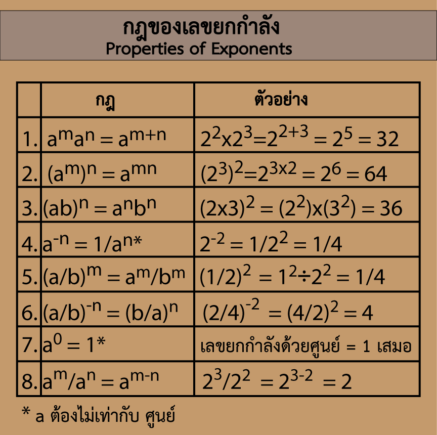

ทบทวนกฎของเลขยกกำลัง
| Rule | กฎ | ตัวอย่าง |
|---|
Zero-Exponent Rule:
เลขที่ยกกำลังด้วยศูนย์ มีค่าเป็น 1 | a0 = 1 | 30 = 1 |
Power Rule:
ยกกำลังตัวเลขที่ยกกำลัง ให้เอากำลังคูณกัน | (am)n = amn | (55)4 = 520 |
Negative Exponent Rule:
เลขยกกำลังที่ติดลบ เท่ากับเศษ 1 ส่วนของเลขตัวนั้น | a-n = 1/an
| 5-2 = 1/52 = 1/25 |
Product Rule:
เลขยกกำลังฐานเหมือนกันคูณกัน ให้เอากำลังมาบวกกัน | am.an = am+n | x.x5 = x1+5= x6 |
Quotient Rule:
เลขยกกำลังฐานเหมือนกันหารกัน ให้เอากำลังมาลบกัน | am/an = am-n
| x5/x2 = x5-2 = x3 |
หรืออาจจะดูได้จาก ตารางสรุป ข้างล่างนี้

การแก้ปัญหาโจทย์เลขยกกำลัง ด้วยตัวเลขหลายหลัก
... (อ่านต่อ ในรุ่นเต็ม นะครับ)
หลักการคือ ต้องพยายามทำฐาน หรือ ตัวเลขยกกำลังให้เท่ากัน จึงจะเปรียบเทียบกันได้
วิธีการ คือ หาตัวหารที่มากที่สุด ที่มาหารตัวเลขยกกำลัง หรือ พูดง่าย ๆ ว่า หา ห.ร.ม ของตัวเลขยกำลัง เช่น
จงเปรียบเทียบค่า ระหว่าง 428 และ 621
พิจารณาดูเลขยกกำลัง คือ 28 และ 21 จะเห็นว่ามีตัว ห.ร.ม. (ตัวเลขที่มากที่สุดที่หารทั้งสองตัว ลงตัวพอดี) คือ 7 น่าจะทำเป็นเลขยกกำลัง 7 ได้ โดยอาศัย Power Rule คือ
428 = 4(4x7) = (44)7 = 2567
621 = 6(3x7) = (63)7 = 2167
∴ 428 มากกว่า 621